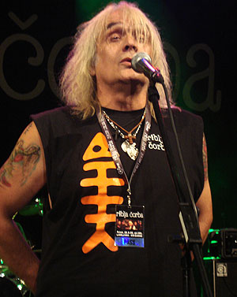
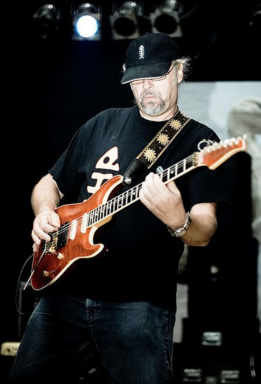
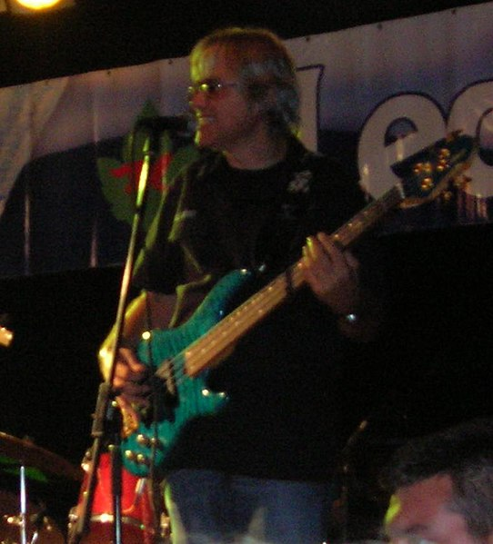

Аутор дигиталног мјеста

Мирко Видаковић
Дурштвене мреже:
Чланови музичке групе



Мирослав Миша Алексић
Рођен 16. август 1953. у Београду, тадашња Југославија, Србија, умро 29. новембар 2020., у Београду, Србија, од коначности живота на потегу постојања нас као јединики.
Биографија
Микец
©ЕТФ БЛ - Интернет програмирање, додаци